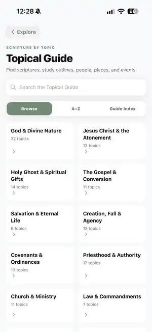
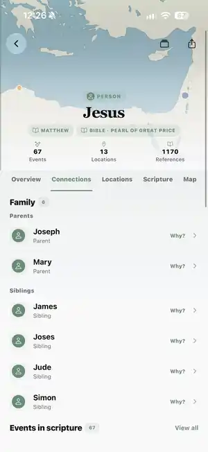

See the world around a person.
Find the events they took part in, the people around them, the places tied to their story, and the passages that connect it all.
Person→Event→Passage
Start with a person, place, event, or verse. Follow the people around it, the places tied to it, the events that shape it, and the source passages behind every connection.
Explorer turns individual names and passages into paths through the larger story. Open a record, follow a connection, and keep going as far as your study takes you.
Find the events they took part in, the people around them, the places tied to their story, and the passages that connect it all.
Open an event to see who was involved, where it happened, which groups were part of it, and where to read it in scripture.
Open Explorer from the verse you are already reading, follow what catches your attention, then return to the text when you are ready.
Explorer lets you move through a person's connections and inspect the path behind a relationship instead of stopping at a name or label.


Explorer covers the Book of Mormon, Old Testament, New Testament, and Pearl of Great Price with the same connected approach.
Follow people, places, groups, events, and source passages through the record.
Move through a large cast of people and events without losing the relationships between them.
Connect teachings and events to the people and places surrounding them.
Explore its own stories while following connections into related biblical accounts.
The counts below are canonical records in the current Bible graph.
The current Bible graph contains 5,900 canonical entities: people, places, groups, and events. Those records are joined by 11,875 relationships that let Explorer move from one part of the story to another and back to the scripture passages behind it.
The graph is intentionally conservative. A person mentioned in a passage is not automatically treated as a participant in an event. Similar names are not automatically merged. When the evidence is uncertain, the data can preserve that uncertainty rather than force a connection.
People, places, groups, and events organized into a connected model of the biblical record.
Connections that tie records to one another and help lead study back to the relevant scripture passages.
Cultivate Labs builds the graph in repeatable stages, reviews the result, and then deliberately tries to find reasons not to trust it before it becomes part of the app.
People, places, events, groups, and relationships are tied back to scripture passages so the graph has a trail back to the source.
Repeated names, quoted figures, and related accounts are handled carefully so one convenient merge does not create false downstream connections.
Once a connection looks plausible, the review changes sides. Instead of asking only whether it fits, an adversarial pass looks for reasons it may be wrong: competing identities, weak source support, reversed relationships, missing context, or a tidy conclusion that says more than the scripture does. Connections that do not survive that challenge are revised, held for more review, or left unresolved.
The same inputs and processing steps can produce the same graph again, which makes changes easier to inspect and releases easier to compare.
Explorer is designed around provenance, conservative relationship rules, and review so you can move through the graph and still understand why a connection is there.
The goal is to help you reach the source passage quickly and see the connection in context.
A person can be named in a passage without being treated as an actor in the event. Explorer keeps those distinctions when the text supports them.
Repeated names, quoted people, and related accounts are reviewed so similar-looking records are not casually treated as the same thing.
When the evidence is not strong enough, Explorer can leave a relationship unresolved rather than fill the gap with a guess.
AI can help in both directions: one pass can surface candidate connections, while an adversarial pass is asked to challenge them, look for counter-evidence, and surface edge cases. Those critiques become questions for the source evidence, scripted checks, and human review to answer before a connection is accepted into a Cultivate Labs release.
Explorer is there when you want more context, and it gets out of the way when you are ready to keep reading.